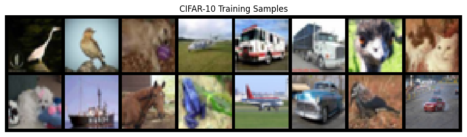
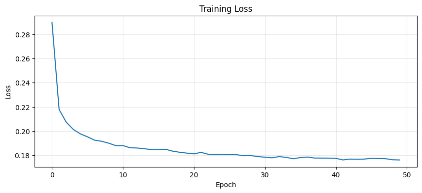
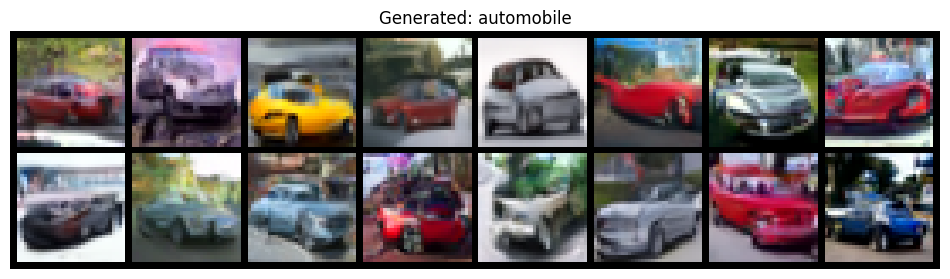
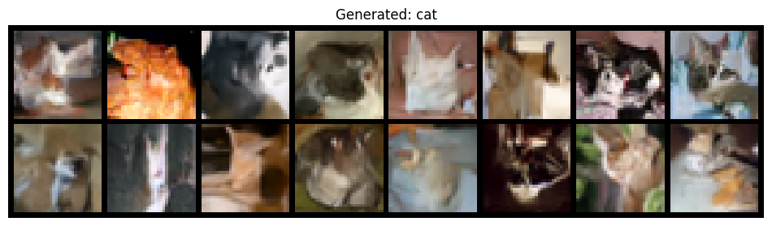
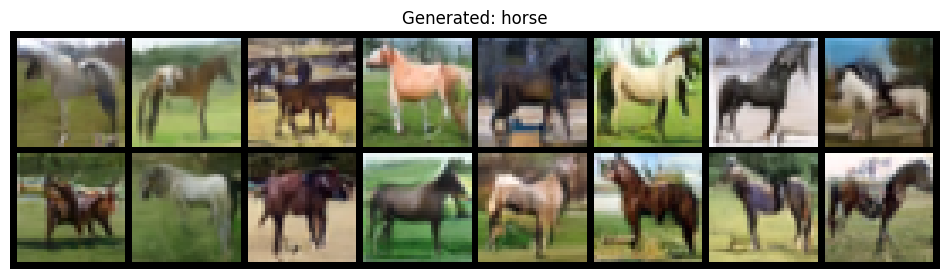
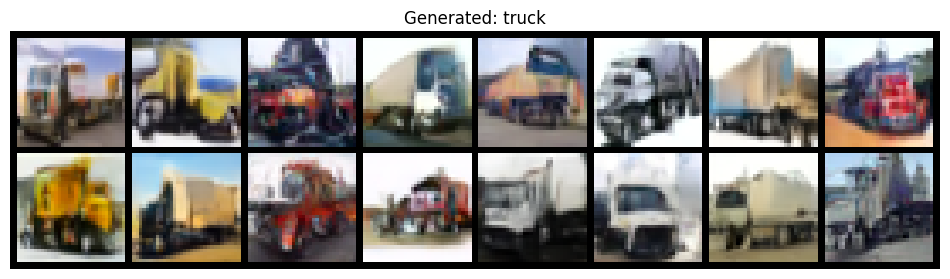
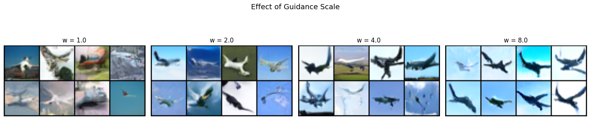

# Install dependencies (uncomment if running in Colab)
# !pip install torch torchvision diffusers torchdiffeq tqdm matplotlib
# Core deep learning
import torch
import torch.nn as nn
import torch.nn.functional as F
from torch.utils.data import DataLoader
# U-Net from diffusers
from diffusers import UNet2DModel
# Data and visualization
import torchvision
import torchvision.transforms as transforms
import matplotlib.pyplot as plt
import numpy as np
# ODE solver for sampling
from torchdiffeq import odeint
# Progress bar
from tqdm.auto import tqdm
# Set device
device = torch.device('cuda' if torch.cuda.is_available() else 'cpu')
print(f"Using device: {device}")Flow Matching Image Generator - CIFAR-10
—title: “Flow Matching Image Generator - CIFAR-10”author: “Hujie Wang”format: htmllisting: false—
Building an Image Generator with Flow MatchingThis notebook implements a conditional flow matching model on CIFAR-10, using the diffusers library for the U-Net architecture.
1. Loading CIFAR-10
# CIFAR-10 class names for reference
CIFAR10_CLASSES = [
'airplane', 'automobile', 'bird', 'cat', 'deer',
'dog', 'frog', 'horse', 'ship', 'truck'
]
NUM_CLASSES = len(CIFAR10_CLASSES) # 10
# Transform: convert to tensor and normalize to [-1, 1]
# Why [-1, 1]? Centering around zero helps with stable training
transform = transforms.Compose([
transforms.ToTensor(), # [0, 255] -> [0, 1]
transforms.Normalize((0.5, 0.5, 0.5), (0.5, 0.5, 0.5)) # [0, 1] -> [-1, 1]
])
# Download and load CIFAR-10
train_dataset = torchvision.datasets.CIFAR10(
root='./data', train=True, download=True, transform=transform
)
# DataLoader with shuffling
batch_size = 128
train_loader = DataLoader(
train_dataset, batch_size=batch_size, shuffle=True, num_workers=2, pin_memory=True
)
print(f"Dataset size: {len(train_dataset)} images")
print(f"Image shape: {train_dataset[0][0].shape}")
print(f"Number of classes: {NUM_CLASSES}")100%|██████████| 170M/170M [00:03<00:00, 47.3MB/s]
/home/wearaway/projects/blog/.venv/lib/python3.12/site-packages/torchvision/datasets/cifar.py:83: VisibleDeprecationWarning: dtype(): align should be passed as Python or NumPy boolean but got `align=0`. Did you mean to pass a tuple to create a subarray type? (Deprecated NumPy 2.4)
entry = pickle.load(f, encoding="latin1")Dataset size: 50000 images
Image shape: torch.Size([3, 32, 32])
Number of classes: 10# Visualize some training images
def show_images(images, labels=None, nrow=8, title='Images'):
"""Display a grid of images."""
# Denormalize from [-1, 1] to [0, 1]
images = (images + 1) / 2
images = images.clamp(0, 1)
grid = torchvision.utils.make_grid(images, nrow=nrow, padding=2)
plt.figure(figsize=(12, 6))
plt.imshow(grid.permute(1, 2, 0).cpu())
plt.axis('off')
plt.title(title)
plt.show()
# Show a batch
images, labels = next(iter(train_loader))
show_images(images[:16], nrow=8, title='CIFAR-10 Training Samples')
2. U-Net Architecture (using diffusers)
We use UNet2DModel from the diffusers library. This is the same architecture used in Stable Diffusion and other state-of-the-art models.
Key features: - Time conditioning: Built-in sinusoidal time embeddings - Class conditioning: We add class embeddings via the class_labels parameter - Attention layers: Self-attention at lower resolutions for global context - Skip connections: Encoder-decoder architecture with skip connections
# Create U-Net model from diffusers# Note: diffusers expects time in range [0, num_train_timesteps], not [0, 1]# We'll scale our t accordinglymodel = UNet2DModel( sample_size=32, # Image size (32x32 for CIFAR-10) in_channels=3, # RGB images out_channels=3, # Output vector field has same shape as input layers_per_block=2, # ResNet blocks per resolution level block_out_channels=(64, 128, 256, 256), # Channels at each resolution down_block_types=( "DownBlock2D", # 32 -> 16 "DownBlock2D", # 16 -> 8 "AttnDownBlock2D", # 8 -> 4 (with attention) "DownBlock2D", # 4 -> 2 ), up_block_types=( "UpBlock2D", # 2 -> 4 "AttnUpBlock2D", # 4 -> 8 (with attention) "UpBlock2D", # 8 -> 16 "UpBlock2D", # 16 -> 32 ), # Class conditioning num_class_embeds=NUM_CLASSES + 1, # +1 for null class (used in CFG))model = model.to(device)print(f"Model parameters: {sum(p.numel() for p in model.parameters()):,}")# Test forward pass# Note: diffusers UNet expects timestep as integer, we'll multiply our t by 1000x = torch.randn(2, 3, 32, 32, device=device)t = torch.randint(0, 1000, (2,), device=device) # timestep as integerc = torch.randint(0, NUM_CLASSES, (2,), device=device)out = model(x, t, class_labels=c).sampleprint(f"Input shape: {x.shape} -> Output shape: {out.shape}")def flow_matching_loss(model, z, class_label, label_dropout=0.1, num_timesteps=1000): """Compute the Conditional Flow Matching loss. Args: model: The U-Net that predicts vector fields z: Real images (data) from the dataset [B, C, H, W] class_label: Class labels [B] (0 to NUM_CLASSES-1) label_dropout: Probability of dropping class label (for CFG) num_timesteps: Scale factor for time (diffusers convention) Returns: Scalar loss value """ batch_size = z.shape[0] device = z.device # Sample random time t ~ Uniform[0, 1] t = torch.rand(batch_size, device=device) # Sample noise ε ~ N(0, I) eps = torch.randn_like(z) # Compute x_t = t*z + (1-t)*ε (Gaussian CondOT path) # Reshape t for broadcasting: [B] -> [B, 1, 1, 1] t_expand = t[:, None, None, None] xt = t_expand * z + (1 - t_expand) * eps # Target vector field: u_t(x|z) = z - ε (constant in time!) target_vector_field = z - eps # Apply label dropout for classifier-free guidance # Replace some labels with the null class (NUM_CLASSES = 10) null_class = NUM_CLASSES # = 10 dropout_mask = torch.rand(batch_size, device=device) < label_dropout class_label_dropped = torch.where(dropout_mask, null_class, class_label) # Convert t from [0, 1] to integer timesteps for diffusers # diffusers expects timesteps in [0, num_timesteps) timesteps = (t * num_timesteps).long().clamp(0, num_timesteps - 1) # Predict vector field predicted_vector_field = model(xt, timesteps, class_labels=class_label_dropped).sample # MSE loss loss = F.mse_loss(predicted_vector_field, target_vector_field) return loss4. Classifier-Free GuidanceProblem: We want to generate images of a specific class, not just any random image.Solution: Classifier-Free Guidance (CFG) amplifies the “class signal” during sampling.During training, we randomly drop class labels (replacing with null class). This teaches the model both:- Conditional generation: \(u_t^\theta(x_t | y)\) – generate class \(y\)- Unconditional generation: \(u_t^\theta(x_t | \varnothing)\) – generate any classDuring sampling, we blend both predictions:\[\tilde{u}_t^\theta(x_t | y) = u_t^\theta(x_t | \varnothing) + w \cdot \bigl(u_t^\theta(x_t | y) - u_t^\theta(x_t | \varnothing)\bigr)\]Where \(w\) is the guidance scale:- \(w = 1\): Standard conditional generation- \(w > 1\): Amplified class signal (stronger conditioning)- \(w = 0\): Pure unconditional generation
class CFGVectorFieldWrapper(nn.Module): """Wraps the U-Net to apply classifier-free guidance during sampling. CFG formula: u_tilde = u_t(x|varnothing) + w * (u_t(x|y) - u_t(x|varnothing)) """ def __init__(self, model, guidance_scale=2.0, num_timesteps=1000): super().__init__() self.model = model self.guidance_scale = guidance_scale self.num_timesteps = num_timesteps self.class_label = None # Set before sampling def forward(self, t, x): """Compute guided vector field for ODE solver. Note: torchdiffeq expects (t, x) order, where t is scalar in [0, 1]. """ batch_size = x.shape[0] device = x.device # Convert scalar t to batch of integer timesteps timestep = int(t.item() * self.num_timesteps) timestep = min(timestep, self.num_timesteps - 1) timesteps = torch.full((batch_size,), timestep, device=device, dtype=torch.long) # Null class for unconditional prediction null_class = torch.full((batch_size,), NUM_CLASSES, device=device, dtype=torch.long) # Get both conditional and unconditional predictions u_uncond = self.model(x, timesteps, class_labels=null_class).sample u_cond = self.model(x, timesteps, class_labels=self.class_label).sample # Apply CFG formula: u_tilde = u_uncond + w * (u_cond - u_uncond) u_guided = u_uncond + self.guidance_scale * (u_cond - u_uncond) return u_guided5. Training Loop
def train(model, train_loader, epochs=50, lr=2e-4, label_dropout=0.1): """Train the flow matching model. Args: model: U-Net model train_loader: DataLoader for training images epochs: Number of training epochs lr: Learning rate label_dropout: Probability of dropping class labels for CFG Returns: List of training losses """ optimizer = torch.optim.AdamW(model.parameters(), lr=lr) scheduler = torch.optim.lr_scheduler.CosineAnnealingLR(optimizer, T_max=epochs) losses = [] model.train() for epoch in range(epochs): epoch_loss = 0 pbar = tqdm(train_loader, desc=f"Epoch {epoch+1}/{epochs}") for z, y in pbar: # z = data, y = class labels z = z.to(device) y = y.to(device) optimizer.zero_grad() loss = flow_matching_loss(model, z, y, label_dropout=label_dropout) loss.backward() # Gradient clipping for stability torch.nn.utils.clip_grad_norm_(model.parameters(), 1.0) optimizer.step() epoch_loss += loss.item() pbar.set_postfix({'loss': f'{loss.item():.4f}'}) scheduler.step() avg_loss = epoch_loss / len(train_loader) losses.append(avg_loss) print(f"Epoch {epoch+1}/{epochs} - Loss: {avg_loss:.4f}") return losses# HyperparametersEPOCHS = 50 # Increase for better results (100+ recommended)LEARNING_RATE = 2e-4LABEL_DROPOUT = 0.1# Train the modellosses = train( model, train_loader, epochs=EPOCHS, lr=LEARNING_RATE, label_dropout=LABEL_DROPOUT)# Plot training loss
plt.figure(figsize=(10, 4))
plt.plot(losses)
plt.xlabel('Epoch')
plt.ylabel('Loss')
plt.title('Training Loss')
plt.grid(True, alpha=0.3)
plt.show()
torchdiffeq.odeint to numerically solve this ODE.
@torch.no_grad()def sample(model, num_samples, class_label, guidance_scale=2.0, num_steps=50): """Generate samples using ODE integration. Args: model: Trained U-Net model num_samples: Number of images to generate class_label: Class to generate (0-9 for CIFAR-10) guidance_scale: CFG guidance scale (higher = stronger conditioning) num_steps: Number of ODE solver steps Returns: Generated images [num_samples, 3, 32, 32] """ model.eval() # Wrap model for CFG vector_field_fn = CFGVectorFieldWrapper(model, guidance_scale=guidance_scale) vector_field_fn.class_label = torch.full((num_samples,), class_label, device=device, dtype=torch.long) # Start from noise ε at t=0 eps = torch.randn(num_samples, 3, 32, 32, device=device) # Time points for ODE solver (from 0 to 1) t_span = torch.linspace(0, 1, num_steps, device=device) # Solve ODE: dx/dt = u(x, t) # odeint returns trajectory at all time points, we want the final one trajectory = odeint( vector_field_fn, eps, t_span, method='euler', # Simple Euler method; can use 'dopri5' for adaptive stepping ) # Get final samples at t=1 samples = trajectory[-1] # Clamp to valid range samples = samples.clamp(-1, 1) return samplesdef display_samples(samples, title='Generated Images', nrow=8): """Display generated samples in a grid.""" # Denormalize from [-1, 1] to [0, 1] samples = (samples + 1) / 2 samples = samples.clamp(0, 1) grid = torchvision.utils.make_grid(samples, nrow=nrow, padding=2) plt.figure(figsize=(12, 6)) plt.imshow(grid.permute(1, 2, 0).cpu()) plt.axis('off') plt.title(title) plt.show()7. Results
Let’s generate images for each CIFAR-10 class and see the effect of different guidance scales.
# Generate samples for each class
model.eval()
print("Generating samples for each class...")
for class_idx, class_name in enumerate(CIFAR10_CLASSES):
samples = sample(model, num_samples=16, class_label=class_idx, guidance_scale=2.0)
display_samples(samples, title=f'Generated: {class_name}')Generating samples for each class...








# Compare different guidance scales
print("\nEffect of guidance scale on 'airplane' class:")
guidance_scales = [1.0, 2.0, 4.0, 8.0]
fig, axes = plt.subplots(1, len(guidance_scales), figsize=(16, 4))
for ax, w in zip(axes, guidance_scales):
samples = sample(model, num_samples=8, class_label=0, guidance_scale=w) # airplane
samples = (samples + 1) / 2
grid = torchvision.utils.make_grid(samples, nrow=4, padding=1)
ax.imshow(grid.permute(1, 2, 0).cpu())
ax.set_title(f'w = {w}')
ax.axis('off')
plt.suptitle('Effect of Guidance Scale', fontsize=14)
plt.tight_layout()
plt.show()
Effect of guidance scale on 'airplane' class:
SummaryWe built a conditional image generator using flow matching:1. U-Net architecture (from diffusers) with time and class conditioning2. Gaussian CondOT path: \(x_t = t \cdot z + (1-t) \cdot \epsilon\) where \(z\) is data, \(\epsilon\) is noise3. Flow matching loss: Learn to predict the vector field $u_t^(x_t) z - \(4. **Classifier-free guidance**: Amplify class signal during sampling5. **ODE sampling**: Integrate from noise (\)t=0\() to image (\)t=1$) using torchdiffeq### Key takeaways:- Flow matching is conceptually simple: just learn the direction from noise to data- The same architecture powers Stable Diffusion, Flux, and other SOTA models- CFG is crucial for high-quality conditional generation### Extensions to try:- Use a DiT (Diffusion Transformer) instead of U-Net (see Part 10)- Train on larger datasets (ImageNet, LAION)- Try different ODE solvers (adaptive stepping with dopri5)- Add EMA (exponential moving average) for better sample quality
# Save the trained model
torch.save(model.state_dict(), 'flow_matching_cifar10.pt')
print("Model saved to flow_matching_cifar10.pt")Model saved to flow_matching_cifar10.pt